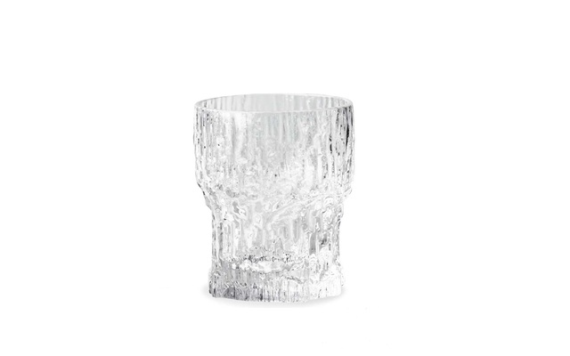
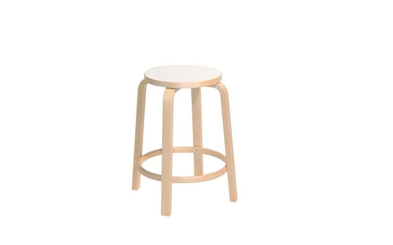
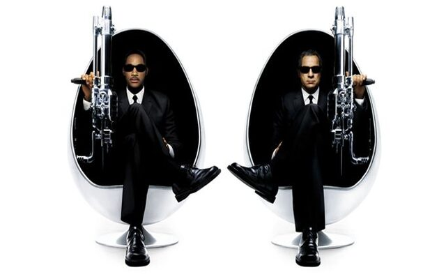
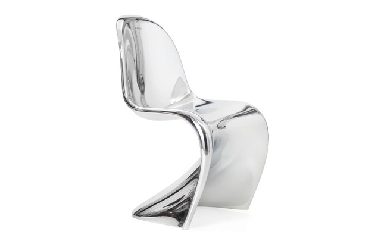

Scandinavia has impacted the modern world's design methodologies via 2 main streams:
Scandinavian design has globally influenced interior decor via it's methodologies of simplicity & functionality. It employs a simplistic philosophy by valuing elements such as negative space, which not only delivers a clean cut look, but then in turn provides the additional functional benefit of a clutter free space. The colour palette for this design scheme is pale light colours like white which contributes to the clean look, with contrasting colours being used as accents. Wood is also often used for contrast which highlights the next principle of this design philosophy which is it’s appreciation of nature. To that end, plants are also often used as décor pieces, succulents being a very common selection. A very prevalent design scheme seen often is white walls, and a wood floor. Contrasting colours may be used for accents on pieces like drapes or lamps. Contrasting colours may be dark colours like black, or bright ones that pop like blood orange, the main point is that they should have a deep hue to contrast against the negative space of pale colours taking up the background. The emphasis on negative space is due to the design principle of minimalism which stems from Scandinavian homes being expensive and small, making utilization of space an important focus. It is said that Scandinavian design principles became especially popular after the industrial revolution as it’s appreciation for nature brought us back to our roots. Illumination wise, this design scheme employs lots of light and illumination within it’s rooms.
Swedish company Ikea, one of the biggest players in the furniture industry makes evident the impact Scandinavian design has on the furniture industry. Other notable landmarks of influence are the iconic Scandinavian designed egg chairs that were featured in the famous Men in Black movie, Panton chairs that were popular in the 60s, Finlandia glassware, and Alvar Aalto stools that were originally used in all the Apple stores. The design principles are again simplicity & functionality. This minimalist aesthetic leads to an elegant & chic look, making it suitable for upscale businesses and dwellings where it is prevalently seen. Natural materials are again dominant, textiles like leather, wool, linen, and often wood. Woods usually consist of Beech, Pine, or Ash which are predominant in the Scandinavian countries. They also have minimal grain, knots, and dark marks which fit the minimal, plain, solid-coloured aesthetic well. Colours are again light & neutral with dark or deep colours used as contrasts or accents. Within Scandinavian culture is a concept known as ‘Hygge’ which translates to comfort or cozy. The concept of Hygge has impacted Scandinavian design, and so we see elements of comfort in this philosophy via items like plush couches, or plush throw blankets.
   --Webpage created by Floyd Pinto--